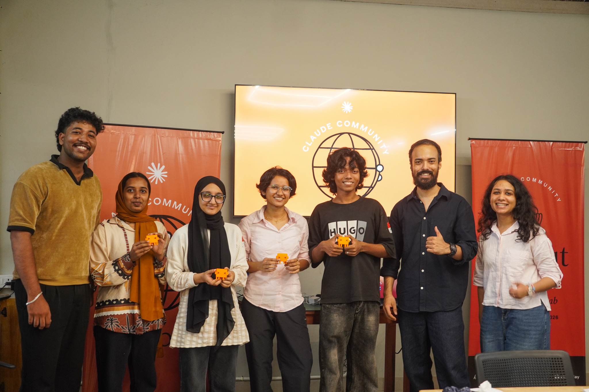

Read Log
→
WINNER · 1ST PLACE
03 October 2026
•
Hackathon & Assistive AI
Hacking Human Ability: Taking First Place at Superhuman Lab
Our team just bagged first place at the Superhuman Lab hackathon at TinkerSpace Calicut! We spent the first weekend of October completely immersed in this event, and it wasn't your usual demo-day theater. The whole goal was to hack human ability by using AI and hardware to turn assistive tech into actual upgrades instead of just basic medical devices. It was an amazing environment with engineers, designers, and people with lived experiences sitting down together to build prototypes that actually matter.
TinkerSpace, Calicut
Read Note
→